Communities and Populations
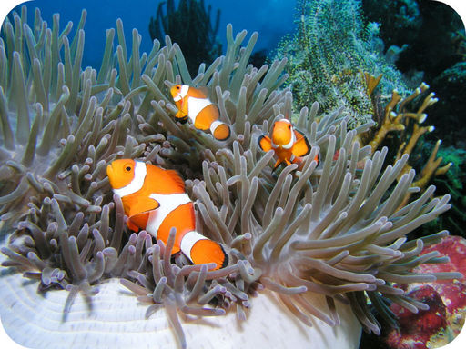
If you saw the movie
Finding Nemo,
then you probably recognize this fish. It’s known as a clownfish, and it’s swimming near the tentacles of an animal called a sea anemone. The sea anemone kills prey by injecting poison with its tentacles. For some reason, the anemone doesn’t harm the clownfish, perhaps because the fish has a coating of mucus that helps disguise it. But why does the clownfish “hang out” with the sea anemone? One reason is for the food. The clownfish eats the remains of the anemone’s prey after it finishes feeding. Another reason is safety. The clownfish is safe from predators when it’s near the anemone. Predators are scared away by the anemone’s poison tentacles. In return, the clownfish helps the anemone catch food by attracting prey with its bright colors. Its feces also provide nutrients to the anemone. The clownfish and anemone are just one example of the diverse ways that living things may help each other in nature. You will learn more about species interactions such as this when you read this chapter.
Community Interactions
Lesson Objectives
-
Define community as the term is used in ecology.
-
Describe predation and its effects on population size and evolution.
-
Explain why interspecific competition leads to extinction or greater specialization.
-
Compare and contrast mutualism, commensalism, and parasitism.
-
Outline primary and secondary succession, and define climax community.
Vocabulary
-
climax community
-
commensalism
-
ecological succession
-
host
-
interspecific competition
-
intraspecific competition
-
keystone species
-
mutualism
-
parasite
-
parasitism
-
pioneer species
-
predation
-
predator
-
prey
-
primary succession
-
secondary succession
-
specialization
Introduction
Biomes as different as deserts and wetlands share something very important. All biomes have populations of interacting species. Species also interact in the same basic ways in all biomes. For example, all biomes have some species that prey on others for food. The focus of study of species interactions is the community.
What Is a Community?
A community is the biotic part of an ecosystem. It consists of all the populations of all the species in the same area. It also includes their interactions. Species interactions in communities are important factors in natural selection. They help shape the evolution of the interacting species. There are three major types of community interactions: predation, competition, and symbiosis.
Predation
Predation
is a relationship in which members of one species (the
predator
) consume members of another species (the
prey
). The lionesses and zebra in
Figure
below
are classic examples of predators and prey. In addition to the lionesses, there is another predator in this figure. Can you spot it? The other predator is the zebra. Like the lionesses, it consumes prey species, in this case species of grass. However, unlike the lionesses, the zebra does not kill its prey. Predator-prey relationships such as these account for most energy transfers in food chains and food webs.
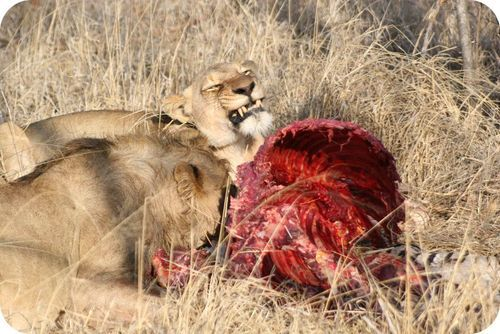
Predators and Their Prey. Two lionesses feed on the carcass of a zebra.
Predation and Population
A predator-prey relationship tends to keep the populations of both species in balance. This is shown by the graph in
Figure
below
. As the prey population increases, there is more food for predators. So, after a slight lag, the predator population increases as well. As the number of predators increases, more prey are captured. As a result, the prey population starts to decrease. What happens to the predator population then?
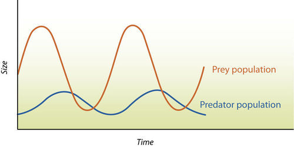
Predator-Prey population Dynamics. As the prey population increases, why does the predator population also increase?
Keystone Species
Some predator species are known as keystone species. A
keystone species
is one that plays an especially important role in its community. Major changes in the numbers of a keystone species affect the populations of many other species in the community. For example, some sea star species are keystone species in coral reef communities. The sea stars prey on mussels and sea urchins, which have no other natural predators. If sea stars were removed from a coral reef community, mussel and sea urchin populations would have explosive growth. This, in turn, would drive out most other species. In the end, the coral reef community would be destroyed.
Adaptations to Predation
Both predators and prey have adaptations to predation that evolve through natural selection. Predator adaptations help them capture prey. Prey adaptations help them avoid predators. A common adaptation in both predator and prey is camouflage. Several examples are shown in
Figure
below
. Camouflage in prey helps them hide from predators. Camouflage in predators helps them sneak up on prey.

Camouflage in Predator and Prey Species. Can you see the crab in the photo on the left? It is camouflaged with the sand. The preying mantis in the middle photo looks just like the dead leaves in the background. Can you tell where one zebra ends and another one begins? This may confuse a predator and give the zebras a chance to run away.
Competition
Competition is a relationship between organisms that strive for the same resources in the same place. The resources might be food, water, or space. There are two different types of competition:
-
Intraspecific competition
occurs between members of the same species. For example, two male birds of the same species might compete for mates in the same area. This type of competition is a basic factor in natural selection. It leads to the evolution of better adaptations within a species.
-
Interspecific competition
occurs between members of different species. For example, predators of different species might compete for the same prey.
Interspecific Competition and Extinction
Interspecific competition often leads to extinction. The species that is less well adapted may get fewer of the resources that both species need. As a result, members of that species are less likely to survive, and the species may go extinct.
Interspecific Competition and Specialization
Instead of extinction, interspecific competition may lead to greater specialization.
Specialization
occurs when competing species evolve different adaptations. For example, they may evolve adaptations that allow them to use different food sources.
Figure
below
describes an example.
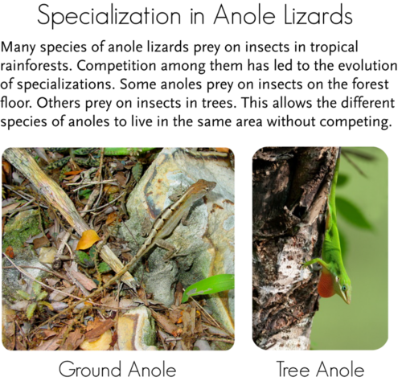
Specialization in Anole Lizards. Specialization lets different species of anole lizards live in the same area without competing.
Symbiotic Relationships
Symbiosis is a close relationship between two species in which at least one species benefits. For the other species, the relationship may be positive, negative, or neutral. There are three basic types of symbiosis: mutualism, commensalism, and parasitism.
Mutualism
Mutualism
is a symbiotic relationship in which both species benefit. An example of mutualism involves goby fish and shrimp (see
Figure
below
). The nearly blind shrimp and the fish spend most of their time together. The shrimp maintains a burrow in the sand in which both the fish and shrimp live. When a predator comes near, the fish touches the shrimp with its tail as a warning. Then, both fish and shrimp retreat to the burrow until the predator is gone. From their relationship, the shrimp gets a warning of approaching danger. The fish gets a safe retreat and a place to lay its eggs.
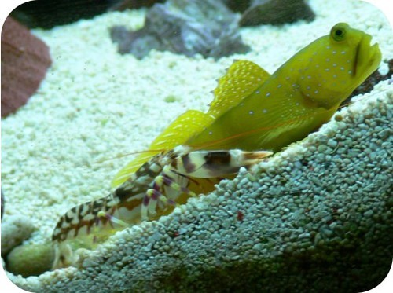
The multicolored shrimp in the front and the green goby fish behind it have a mutualistic relationship.
Commensalism
Commensalism
is a symbiotic relationship in which one species benefits while the other species is not affected. One species typically uses the other for a purpose other than food. For example, mites attach themselves to larger flying insects to get a “free ride.” Hermit crabs use the shells of dead snails for homes.
Parasitism
Parasitism
is a symbiotic relationship in which one species (the
parasite
) benefits while the other species (the
host
) is harmed. Many species of animals are parasites, at least during some stage of their life. Most species are also hosts to one or more parasites. Some parasites live on the surface of their host. Others live inside their host. They may enter the host through a break in the skin or in food or water. For example, roundworms are parasites of mammals, including humans, cats, and dogs (see
Figure
below
). The worms produce huge numbers of eggs, which are passed in the host’s feces to the environment. Other individuals may be infected by swallowing the eggs in contaminated food or water.
Roundworm. A roundworm like this one might eventually fill a dog’s intestine unless it gets medical treatment.
Some parasites kill their host, but most do not. It’s easy to see why. If a parasite kills its host, the parasite is also likely to die. Instead, parasites usually cause relatively minor damage to their host.
Ecological Succession
Communities are not usually static. The numbers and types of species that live in them generally change through time. This is called
ecological succession
. Important cases of succession are primary and secondary succession.
Primary Succession
Primary succession
occurs in an area that has never before been colonized. Generally, the area is nothing but bare rock. This type of environment may come about when
-
lava flows from a volcano and hardens into rock.
-
a glacier retreats and leaves behind bare rock.
-
a landslide uncovers an area of bare rock.
The first species to colonize a disturbed area such as this are called
pioneer species
(see
Figure
below
). They change the environment and pave the way for other species to come into the area. Pioneer species are likely to include bacteria and lichens that can live on bare rock. Along with wind and water, they help weather the rock and form soil. Once soil begins to form, plants can move in. At first, the plants include grasses and other species that can grow in thin, poor soil. As more plants grow and die, organic matter is added to the soil. This improves the soil and helps it hold water. The improved soil allows shrubs and trees to move into the area.
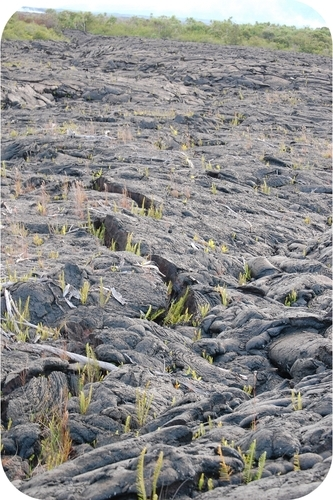
Primary Succession. New land from a volcanic eruption is slowly being colonized by a pioneer species.
Secondary Succession
Secondary succession
occurs in a formerly inhabited area that was disturbed. The disturbance could be a fire, flood, or human action such as farming. This type of succession is faster because the soil is already in place. In this case, the pioneer species are plants such as grasses, birch trees, and fireweed. Organic matter from the pioneer species improves the soil. This lets other plants move into the area. An example of this type of succession is shown in
Figure
below
.
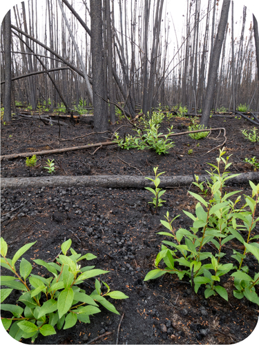
Secondary Succession. Two months after a forest fire, new plants are already sprouting among the charred logs.
Climax Communities
Many early ecologists thought that a community always goes through the same series of stages during succession. They also assumed that succession always ends with a final stable stage. They called this stage the
climax community
. Today, most ecologists no longer hold these views. They believe that continued change is normal in most ecosystems. They think that most communities are disturbed too often to become climax communities.
Lesson Summary
-
A community is the biotic part of an ecosystem. It consists of all the populations of all the species that live in the same area. It also includes their interactions.
-
Predation is a relationship in which members of one species (the predator) consume members of another species (the prey). A predator-prey relationship keeps the populations of both species in balance.
-
Competition is a relationship between organisms that strive for the same resources in the same place. Intraspecific competition occurs between members of the same species. It improves the species’ adaptations. Interspecific competition occurs between members of different species. It may lead to one species going extinct or both becoming more specialized.
-
Symbiosis is a close relationship between two species in which at least one species benefits. Mutualism is a symbiotic relationship in which both species benefit. Commensalism is a symbiotic relationship in which one species benefits while the other species is not affected. Parasitism is a symbiotic relationship in which one species (the parasite) benefits while the other species (the host) is harmed.
-
Ecological succession is the process in which a community changes through time. Primary succession occurs in an area that has never before been colonized. Secondary succession occurs in a formerly inhabited area that was disturbed.
Lesson Review Questions
Recall
1. List the three major types of community interactions.
2. Describe the relationship between a predator population and the population of its prey.
3. What is a keystone species? Give an example.
4. Define mutualism and commensalism.
5. What is a climax community?
6. Summarize how ideas about ecological succession and climax communities have changed.
Apply Concepts
7. In 1980, a massive volcanic eruption of Mount St. Helen’s in Washington State covered a large area with lava and ash. By 2010, plants were growing in the area, including some small trees. What type of ecological succession had occurred? How do you know? Describe how living things colonized the bare rock.
Think Critically
8. Compare and contrast the evolutionary effects of intraspecific and interspecific competition.
9. Explain why most parasites do not kill their host. Why is it in their own best interest to keep their host alive?
Points to Consider
Communities consist of populations of different species. The size and growth of populations in a community are influenced by species interactions. For example, predator-prey relationships control the growth of both predator and prey populations.
-
How might populations grow without these influences? What other factors do you think might affect population growth?
-
What factors do you think may have affected the growth of the human population?
Characteristics of Populations
Lesson Objectives
-
Define population size, density, and dispersion.
-
Relate population pyramids and survivorship curves to population structure.
-
Identify factors that determine population growth rate.
-
Compare and contrast exponential and logistic growth.
Vocabulary
-
age-sex structure
-
carrying capacity (K)
-
dispersal
-
emigration
-
exponential growth
-
immigration
-
K
-selected
-
logistic growth
-
migration
-
population density
-
population distribution
-
population growth rate (r)
-
population pyramid
-
r
-selected
-
survivorship curve
Introduction
Communities are made up of populations of different species. In biology, a population is a group of organisms of the same species that live in the same area. The population is the unit of natural selection and evolution. How large a population is and how fast it is growing are often used as measures of its health.
Population Size, Density, and Distribution
Population size is the number of individuals in a population. For example, a population of insects might consist of 100 individual insects, or many more. Population size influences the chances of a species surviving or going extinct. Generally, very small populations are at greatest risk of extinction. However, the size of a population may be less important than its density.
Population Density
Population density
is the average number of individuals in a population per unit of area or volume. For example, a population of 100 insects that live in an area of 100 square meters has a density of 1 insect per square meter. If the same population lives in an area of only 1 square meter, what is its density? Which population is more crowded? How might crowding affect the health of a population?
Population Distribution
Population density just gives the average number of individuals per unit of area or volume. Often, individuals in a population are not spread out evenly. Instead, they may live in clumps or some other pattern (see
Figure
below
). The pattern may reflect characteristics of the species or its environment.
Population distribution
describes how the individuals are distributed, or spread throughout their habitat.
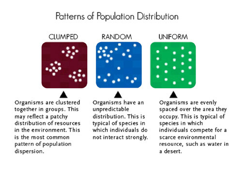
Patterns of Population Distribution. What factors influence the pattern of a population over space?
Population Structure
Population growth is the change in the size of the population over time. An important factor in population growth is
age-sex structure
. This is the number of individuals of each sex and age in the population. The age-sex structure influences population growth. This is because younger people are more likely to reproduce, while older people have higher rates of dying.
Population Pyramids
Age-sex structure is represented by a
population pyramid
. This is a bar graph, like the one
Figure
below
. In this example, the bars become narrower from younger to older ages. Can you explain why?
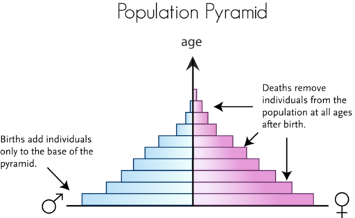
Population Pyramid. A population pyramid represents the age-sex structure of a population.
Survivorship Curves
Another way to show how deaths affect populations is with
survivorship curves
. These are graphs that represent the number of individuals still alive at each age. Examples are shown in
Figure
below
.
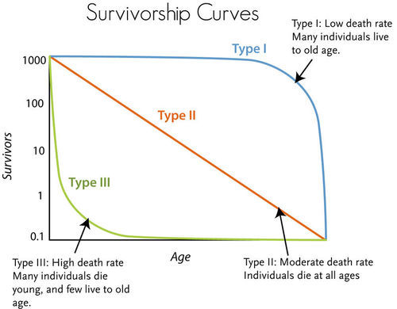
Survivorship Curves. Survivorship curves reflect death rates at different ages.
The three types of curves shown in the figure actually represent different strategies species use to adapt to their environment:
-
Type I: Parents produce relatively few offspring and provide them with a lot of care. As a result, most of the offspring survive to adulthood so they can reproduce. This pattern is typical of large animals, including humans.
-
Type II: Parents produce moderate numbers of offspring and provide some parental care. Deaths occur more uniformly throughout life. This pattern occurs in some birds and many asexual species.
-
Type III: Parents produce many offspring but provide them with little or no care. As a result, relatively few offspring survive to adulthood. This pattern is typical of plants, invertebrates, and many species of fish.
The type I strategy occurs more often in stable environments. The Type III strategy is more likely in unstable environments. Can you explain why?
Population Growth
Populations gain individuals through births and immigration. They lose individuals through deaths and emigration. These factors together determine how fast a population grows.
Population Growth Rate
Population growth rate (
r
)
is how fast a population changes in size over time. A positive growth rate means a population is increasing. A negative growth rate means it is decreasing. The two main factors affecting population growth are the birth rate (
b
) and death rate (
d
). Population growth may also be affected by people coming into the population from somewhere else (
immigration
,
i
) or leaving the population for another area (
emigration
,
e
). The formula for population growth takes all these factors into account.
r
= (
b
+
i
) - (
d
+
e
)
-
r
= population growth rate
-
b
= birth rate
-
i
= immigration rate
-
d
= death rate
-
e
= emigration rate
Two lectures on demography are available at
http://www.youtube.com/watch?v=3diw1Hu3auk
(50:36) and
http://www.youtube.com/watch?v=Wg3ESbyKbic
(49:38).
Dispersal and Migration
Other types of movements may also affect population size and growth. For example, many species have some means of
dispersal
. This refers to offspring moving away from their parents. This prevents the offspring from competing with the parents for resources such as light or water. For example, dandelion seeds have “parachutes.” They allow the wind to carry the seeds far from the parents (see
Figure
below
).
Dandelion Seeds. These dandelion seeds may disperse far from the parent plant. Why might this be beneficial to both parents and offspring?
Migration is another type of movement that changes population size.
Migration
is the regular movement of individuals or populations each year during certain seasons. The purpose of migration usually is to find food, mates, or other resources. For example, many Northern Hemisphere birds migrate thousands of miles south each fall. They go to areas where the weather is warmer and more resources are available (see
Figure
below
). Then they return north in the spring to nest. Some animals, such as elk, migrate vertically. They go up the sides of mountains in spring as snow melts. They go back down the mountain sides in fall as snow returns.
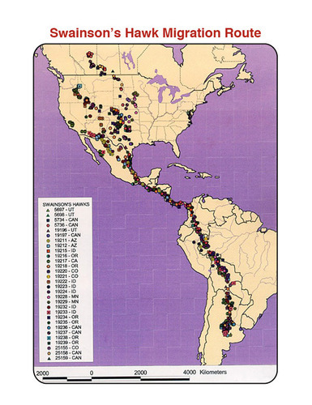
Swainson’s hawks migrate from North to South America and back again each year. This map shows where individual hawks have been identified during their migration.
Patterns of Population Growth
Populations may show different patterns of growth. The growth pattern depends partly on the conditions under which a population lives.
Exponential Growth
Under ideal conditions, populations of most species can grow at exponential rates. Curve A in
Figure
below
represents
exponential growth
. The population starts out growing slowly. As population size increases, the growth rate also increases. The larger the population becomes, the faster it grows.
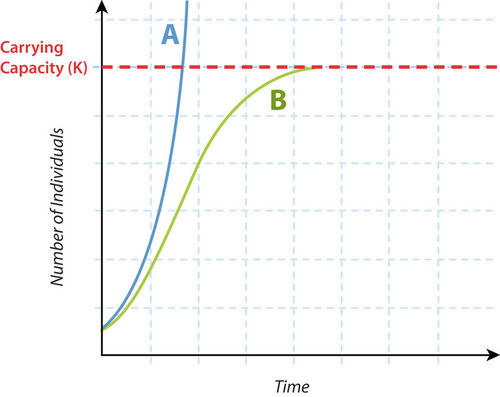
Exponential and Logistic Growth. Curve A shows exponential growth. Curve B shows logistic growth.
Logistic Growth
Most populations do not live under ideal conditions. Therefore, most do not grow exponentially. Certainly, no population can keep growing exponentially for very long. Many factors may limit growth. Often, the factors are density dependent. These are factors that kick in when the population becomes too large and crowded. For example, the population may start to run out of food or be poisoned by its own wastes. As a result, population growth slows and population size levels off. Curve B in
Figure
above
represents this pattern of growth, which is called
logistic growth
.
At what population size does growth start to slow in the logistic model of growth? That depends on the population’s carrying capacity (see
Figure
above
). The
carrying capacity (K)
is the largest population size that can be supported in an area without harming the environment. Population growth hits a ceiling at that size in the logistic growth model.
K
-Selected and
r
-Selected Species
Species can be divided into two basic types when it comes to how their populations grow.
-
Species that live in stable environments are likely to be
K
-selected
. Their population growth is controlled by density-dependent factors. Population size is generally at or near the carrying capacity. These species are represented by curve B in
Figure
above
.
-
Species that live in unstable environments are likely to
r
-selected
. Their potential population growth is rapid. For example, they have large numbers of offspring. However, individuals are likely to die young. Thus, population size is usually well below the carrying capacity. These species are represented by the lower part of curve A in
Figure
above
.
Lesson Summary
-
Population size is the number of individuals in a population. Population density is the average number of individuals per unit of area or volume. The pattern of spacing of individuals in a population may be affected by characteristics of a species or its environment.
-
The age-sex structure of a population is the number of individuals of each sex and age in the population. Age-sex structure influences population growth. It is represented by a population pyramid. The number of survivors at each age is plotted on a survivorship curve.
-
Population growth rate is how fast a population changes in size over time. It is determined by rates of birth, death, immigration, and emigration.
-
Under ideal conditions, populations can grow exponentially. The growth rate increases as the population gets larger. Most populations do not live under ideal conditions and grow logistically instead. Density-dependent factors slow population growth as population size nears the carrying capacity.
Lesson Review Questions
Recall
1. What is population density?
2. Define immigration and emigration.
3. What is migration? Give an example.
4. Write the formula for the population growth rate. Identify all the variables.
5. State why dispersal of offspring away from their parents might be beneficial.
6. Describe exponential population growth.
7. What are
K
-selected and
r
-selected species?
Apply Concepts
8. A population of 820 insects lives in a 1.2-acre area. They gather nectar from a population of 560 flowering plants. The plants live in a 0.2-acre area. Which population has greater density, the insects or the plants?
9. Assume that a population pyramid has a very broad base. What does that tell you about the population it represents?
Think Critically
10. What can you infer about a species that has a random pattern of distribution over space? A uniform pattern?
11. Compare and contrast Type I and Type III survivorship curves.
Points to Consider
Human populations have an interesting history that you will read about in the next lesson. You just read about population dispersion and growth. Make some predictions about dispersion and growth in human populations:
-
Do you think human populations have a clumped, random, or uniform dispersion?
-
How fast do human populations grow? What might limit their growth?
Human Population Growth
Lesson Objectives
-
Describe early human population growth.
-
Outline the stages of the demographic transition.
-
Explain trends in recent human population growth.
-
Summarize the human population problem and possible solutions to the problem.
Vocabulary
Introduction
Humans have been called the most successful “weed species” Earth has ever seen. Like weeds, human populations are fast growing. They also disperse rapidly. They have colonized habitats from pole to pole. Overall, the human population has had a pattern of exponential growth, as shown in
Figure
below
. The population increased very slowly at first. As it increased in size, so did its rate of growth.

Growth of the Human Population. This graph gives an overview of human population growth since 10,000 BC. It took until about 1800 AD for the number of humans to reach 1 billion. It took only a little over 100 years for the number to reach 2 billion. Today, the human population is rapidly approaching the 7 billion mark! Why do you think the human population began growing so fast?
Early Population Growth
Homo sapiens
arose about 200,000 years ago in Africa. Early humans lived in small populations of nomadic hunters and gatherers. They first left Africa about 40,000 years ago. They soon moved throughout Europe, Asia, and Australia. By 10,000 years ago, they had reached the Americas. During this long period, birth and death rates were both fairly high. As a result, population growth was slow. Humans invented agriculture about 10,000 years ago. This provided a bigger, more dependable food supply. It also let them settle down in villages and cities for the first time. The death rate increased because of diseases associated with domestic animals and crowded living conditions. The birth rate increased because there was more food and settled life offered other advantages. The combined effect was continued slow population growth.
Demographic Transition
Major changes in the human population first began during the 1700s in Europe and North America. First death rates fell, followed somewhat later by birth rates.
Death Rates Fall
Several advances in science and technology led to lower death rates in 18
th
century Europe and North America:
-
New scientific knowledge of the causes of disease led to improved water supplies, sewers, and personal hygiene.
-
Better farming techniques and machines increased the food supply.
-
The Industrial Revolution of the 1800s led to new sources of energy, such as coal and electricity. This increased the efficiency of the new agricultural machines. It also led to train transport, which improved the distribution of food.
For all these reasons, death rates fell, especially in children. This allowed many more children to survive to adulthood, so birth rates increased. As the gap between birth and death rates widened, the human population grew faster.
Birth Rates Fall
It wasn’t long before birth rates started to fall as well in Europe and North America. People started having fewer children because large families were no longer beneficial for several reasons.
-
As child death rates fell and machines did more work, farming families no longer needed to have as many children to work in the fields.
-
Laws were passed that required children to go to school. Therefore, they could no longer work and contribute to their own support. They became a drain on the family’s income.
Eventually, birth rates fell to match death rates. As a result, population growth slowed to nearly zero.
Stages of the Demographic Transition
These changes in population that occurred in Europe and North America have been called the
demographic transition
. The transition can be summarized in the following four stages, which are illustrated in
Figure
below
:
-
Stage 1—High birth and death rates lead to slow population growth.
-
Stage 2—The death rate falls but the birth rate remains high, leading to faster population growth.
-
Stage 3—The birth rate starts to fall, so population growth starts to slow.
-
Stage 4—The birth rate reaches the same low level as the death rate, so population growth slows to zero.
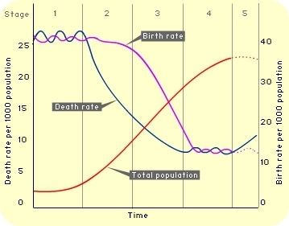
Stages of the Demographic Transition. In the demographic transition, the death rate falls first. After a lag, the birth rate also falls. How do these changes affect the rate of population growth over time?
Recent Population Growth
At one time, scientists predicted that all human populations would pass through the same demographic transition as Europe and North America. Now, they are not so sure. Death rates have fallen throughout the world. No country today remains in Stage 1 of the transition. However, birth rates are still high in many poor countries. These populations seem to be stuck in Stage 2. An example is the African country of Angola. Its population pyramid for 2005 is shown in
Figure
below
. The wide base of the pyramid base reflects the high birth rate of this population.
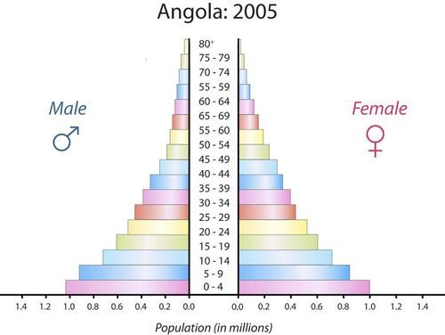
Angola’s population pyramid is typical of Stage 2 of the demographic transition.
Many other countries have shifted to Stage 3 of the transition. Birth rates have started to fall. As a result, population growth is slowing. An example is Mexico. Its population pyramid for 1998 is shown in
Figure
below
. It reflects a recent fall in the birth rate.
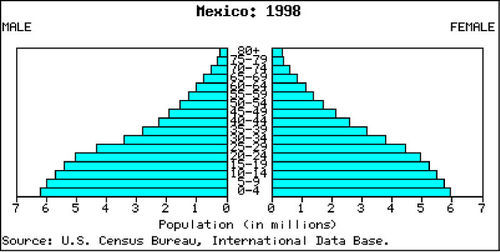
Mexico’s 1998 population pyramid is typical of Stage 3 population. How can you tell that the birth rate has started to fall?
Most developed nations have entered Stage 4. Sweden is an example (see
Figure
below
). The birth rate has been low for many years in Sweden. Therefore, the rate of population growth is near zero.
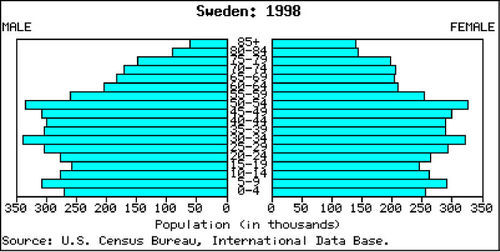
Sweden’s 1998 population pyramid shows a population in Stage 4.
In some countries, birth rates have fallen even lower than death rates. As result, their population growth rates are negative. In other words, the populations are shrinking in size. These populations have top-heavy population pyramids, like the one for Italy shown in
Figure
below
. This is a new stage of the demographic transition, referred to as Stage 5. You might think that a negative growth rate would be a good thing. In fact, it may cause problems. For example, growth-dependent industries decline. Supporting the large aging population is also a burden for the shrinking younger population of workers.
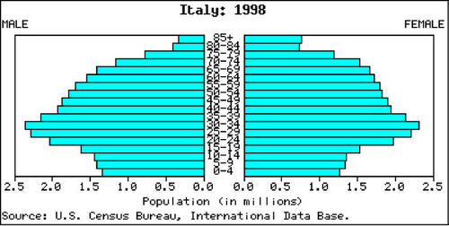
This 1998 population pyramid for Italy represents a Stage 5 population.
Future Population Growth
During the month of October 2011, the world's population surpassed 7 billion people. It took just 12 years for the population to increase by a billion people. At this rate, there may be well over 9 billion people by 2050, and easily 10 billion people by 2100. This raises many questions for both people and the planet. These issues are discussed at
http://www.cnn.com/2011/10/17/opinion/sachs-global-population/index.html
.
The human population is now growing by more than 200,000 people a day. The human population may well be close to its carrying capacity. It has already harmed the environment. An even larger human population may cause severe environmental problems. This could lead to outbreaks of disease, starvation, and global conflict. There are three potential solutions:
-
Use technology to make better use of resources to support more people.
-
Change behaviors to reduce human numbers and how much humans consume.
-
Distribute resources more fairly among all the world’s people.
Which solution would you choose?
Census Update: What the World Will Look like in 2050
On June 30, 2011, Time.com published
Census Update: What the World Will Look like in 2050
(
http://www.time.com/time/nation/article/0,8599,2080404,00.html
). According to the U.S Census Bureau, in 2050, there will be 9.4 billion people:
-
India will be the most populous nation, surpassing China sometime around 2025.
-
The U.S. will remain the third most populous nation, with a population of 423 million (up from 308 million in 2010).
-
Declining birth rates Japan and Russia will cause them to fall from their current positions as the 9th and 10th most populous nations, respectively, to 16th and 17th.
-
Nigeria will have a population of 402 million, up from 166 million people.
-
Ethiopia's population will likely triple, from 91 million to 278 million, making the East African nation one of the top 10 most populous countries in the world.
So what does all this mean?
-
The African continent is expected to experience significant population growth in the coming decades, which could compound the already-problematic food-supply issues in some African nations.
-
Immigration and differing birth rates among races will change the ethnic composition of the U.S.
-
Population booms in Africa and India, the decline of Russia and the expected plateau of China will all change the makeup of the estimated 9.4 billion people who will call Earth home in 2050.
Lesson Summary
-
Early humans lived in small populations of nomadic hunters and gatherers. Both birth and death rates were fairly high. As a result, human population growth was very slow. The invention of agriculture increased both birth and death rates. The population continued to grow slowly.
-
Major changes in the human population first began during the 1700s. This occurred in Europe and North America. First, death rates fell while birth rates remained high. This led to rapid population growth. Later, birth rates also fell. As a result, population growth slowed.
-
Other countries have completed a similar demographic transition. However, some countries seem stalled at early stages. They have high birth rates and rapidly growing populations.
-
The total human population may have to stop growing eventually. Even if we reduce our use of resources and distribute them more fairly, at some point the carrying capacity will be reached.
Lesson Review Questions
Recall
1. How did the invention of agriculture affect human birth and death rates? How did it affect human population growth?
2. Outline the four stages of the demographic transition as it occurred in Europe and North America.
3. State two reasons why death rates fell in Europe and North America, starting in the 1700s.
4. Why did birth rates fall in Europe and North America during the demographic transition?
5. Why was a fifth stage added to the demographic transition model? Describe a population at this stage.
Apply Concepts
6. Which stage of the demographic transition is represented by the population pyramid
below
?
7. Assume you will add a line to the graph in
Figure
above
to represent the population growth rate (r). Describe what the line would like.
Think Critically
8. Evaluate how well the original demographic transition model represents human populations today.
9. What is the human population problem? What are some potential solutions? Which solution do you think is best? Present a logical argument to support your choice.
Points to Consider
The human population may already be larger than its carrying capacity.
-
What evidence might show that there are too many people on Earth today?
-
How does human overpopulation affect the environment? How does it affect the populations of other species?
The Biodiversity Crisis
Lesson Objectives
-
Define biodiversity.
-
Identify economic benefits and ecosystem services of biodiversity.
-
Relate human actions to the sixth mass extinction.
Vocabulary
-
exotic species
-
habitat loss
-
sixth mass extinction
Introduction
One of the effects of human overpopulation is the loss of other species. The rapidly growing human population has reduced Earth’s biodiversity.
What Is Biodiversity?
Biodiversity refers to the variety of life and its processes, including the variety of living organisms, the genetic differences among them, and the communities and ecosystems in which they occur. Scientists have identified about 1.9 million species alive today. They are divided into the six kingdoms of life shown in
Figure
below
. Scientists are still discovering new species. Thus, they do not know for sure how many species really exist today. Most estimates range from 5 to 30 million species.
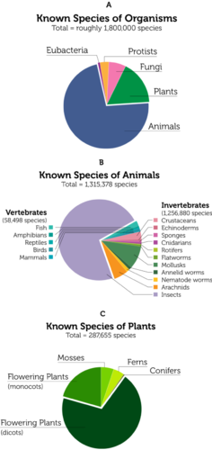
Known species represent only a fraction of all species that exist on Earth.
A discussion of biodiversity is available at
http://www.youtube.com/watch?v=vGxJArebKoc
(6:12).
Millions of Unseen Species
A study released in August 2011 estimates that Earth has almost 8.8 million animal, plant and fungi species, but we've only discovered less than a quarter of them. So far, only 1.9 million species have been found. Recent newly discovered species have been very diverse: a psychedelic frogfish, a lizard the size of a dime and even a blind hairy mini-lobster at the bottom of the ocean. There are potential benefits from these undiscovered species, which need to be found before they disappear from the planet. The study estimates that of the 8.8 million species, about 6.5 million would be on land and 2.2 million in the ocean. The research estimates that animals rule with 7.8 million species, followed by fungi with 611,000 and plants with just shy of 300,000 species. See
http://news.yahoo.com/wild-world-millions-unseen-species-fill-earth-210051661.html
for additional information.
Why Is Biodiversity Important?
Human beings benefit in many ways from biodiversity. Biodiversity has direct economic benefits. It also provides services to entire ecosystems.
Economic Benefits of Biodiversity
The diversity of species provides humans with a wide range of economic benefits:
-
Wild plants and animals maintain a valuable pool of genetic variation. This is important because domestic species are genetically uniform. This puts them at great risk of dying out due to disease.
-
Other organisms provide humans with many different products. Timber, fibers, adhesives, dyes, and rubber are just a few.
-
Certain species may warn us of toxins in the environment. When the peregrine falcon nearly went extinct, for example, it warned us of the dangers of DDT.
-
More than half of the most important prescription drugs come from wild species. Only a fraction of species have yet been studied for their medical potential.
-
Other living things provide inspiration for engineering and technology. For example, the car design in
Figure
below
was based on a fish.
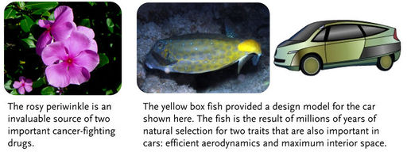
From flowers to fish, biodiversity benefits humans in many ways.
Ecosystem Services of Biodiversity
Biodiversity generally increases the productivity and stability of ecosystems. It helps ensure that at least some species will survive environmental change. It also provides many other ecosystem services. For example:
-
Plants and algae maintain the atmosphere. During photosynthesis, they add oxygen and remove carbon dioxide.
-
Plants help prevent soil erosion. They also improve soil quality when they decompose.
-
Microorganisms purify water in rivers and lakes. They also return nutrients to the soil.
-
Bacteria fix nitrogen and make it available to plants. Other bacteria recycle the nitrogen from organic wastes and remains of dead organisms.
-
Insects and birds pollinate flowering plants, including crop plants.
-
Natural predators control insect pests. They reduce the need for expensive pesticides, which may harm people and other living things.
Human Actions and the Sixth Mass Extinction
Over 99 percent of all species that ever lived on Earth have gone extinct. Five mass extinctions are recorded in the fossil record. They were caused by major geologic and climatic events. Evidence shows that a
sixth mass extinction
is occurring now. Unlike previous mass extinctions, the sixth extinction is due to human actions.
Some scientists consider the sixth extinction to have begun with early hominids during the Pleistocene. They are blamed for over-killing big mammals such as mammoths. Since then, human actions have had an ever greater impact on other species. The present rate of extinction is between 100 and 100,000 species per year. In 100 years, we could lose more than half of Earth’s remaining species.
Causes of Extinction
The single biggest cause of extinction today is
habitat loss
. Agriculture, forestry, mining, and urbanization have disturbed or destroyed more than half of Earth’s land area. In the U.S., for example, more than 99 percent of tall-grass prairies have been lost. Other causes of extinction today include:
-
Exotic species
introduced by humans into new habitats. They may carry disease, prey on native species, and disrupt food webs. Often, they can out-compete native species because they lack local predators. An example is described in
Figure
below
.
-
Over-harvesting of fish, trees, and other organisms. This threatens their survival and the survival of species that depend on them.
-
Global climate change, largely due to the burning of fossil fuels. This is raising Earth’s air and ocean temperatures. It is also raising sea levels. These changes threaten many species.
-
Pollution, which adds chemicals, heat, and noise to the environment beyond its capacity to absorb them. This causes widespread harm to organisms.
-
Human overpopulation, which is crowding out other species. It also makes all the other causes of extinction worse.
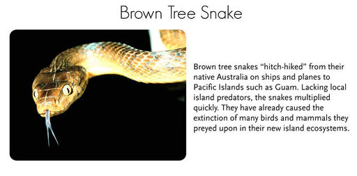
Brown Tree Snake. The brown tree snake is an exotic species that has caused many extinctions on Pacific islands such as Guam.
Effects of Extinction
The results of a study released in the summer of 2011 have shown that the decline in the numbers of large predators like sharks, lions and wolves is disrupting Earth's ecosystem in all kinds of unusual ways. The study, conducted by scientists from 22 different institutions in six countries, confirmed the sixth mass extinction. The study states that this mass extinction differs from previous ones because it is entirely driven by human activity through changes in land use, climate, pollution, hunting, fishing and poaching. The effects of the loss of these large predators can be seen in the oceans and on land.
-
Fewer cougars in the western US state of Utah led to an explosion of the deer population. The deer ate more vegetation, which altered the path of local streams and lowered overall biodiversity.
-
In Africa, where lions and leopard are being lost to poachers, there is a surge in the numbers of olive baboons who are transferring intestinal parasites to human who live nearby.
-
In the oceans, industrial whaling led a change in the diets of killer whales, who eat more sea lion, seals and otters and dramatically lowered those population counts.
The study concludes that the loss of big predators has likely driven many of the pandemics, population collapses and ecosystem shifts the Earth has seen in recent centuries. See
http://www.nsf.gov/news/news_summ.jsp?cntn_id=121020
for additional information.
KQED: Disappearing Frogs
Around the world, frogs are declining at an alarming rate due to threats like pollution, disease and climate change. Frogs bridge the gap between water and land habitats, making them the first indicators of ecosystem changes. Meet the California researchers working to protect frogs across the state and across the world at
http://www.kqed.org/quest/television/disappearing-frogs
. Learn about the plight of the yellow-legged frog at
http://www.kqed.org/quest/radio/plight-of-the-yellowlegged-frog
.

Click on the image above for more content
KQED: Nonnative Species
Scoop a handful of critters out of the San Francisco Bay and you'll find many organisms from far away shores. Invasive kinds of mussels, fish and more are choking out native species, challenging experts around the state to change the human behavior that brings them here. See
http://www.kqed.org/quest/television/san-francisco-bay-invaders
for more information.
Click on the image above for more content
How You Can Help Protect Biodiversity
There are many steps you can take to help protect biodiversity. For example:
-
Consume wisely. Reduce your consumption wherever possible. Re-use or recycle rather than throw out and buy new. When you do buy new, choose products that are energy efficient and durable.
-
Avoid plastics. Plastics are made from petroleum and produce toxic waste.
-
Go organic. Organically grown food is better for your health. It also protects the environment from pesticides and excessive nutrients in fertilizers.
-
Save energy. Unplug electronic equipment and turn off lights when not in use. Take mass transit instead of driving.
See
http://www.youtube.com/watch?v=GnK7gNXxb3c
for an outstanding
60 Minutes
video of the Great Migration in Kenya, and the issues facing these animals.
KQED: Lost Salmon
Because of a sharp decline in their numbers, the entire salmon fishing season in the ocean off California and Oregon was canceled in both 2008 and 2009. At no other time in history has this salmon fishery been closed. The species in the most danger is the California coho salmon. Examine efforts to protect the coho in Northern California and explores the important role salmon play in the native ecosystem at
http://www.kqed.org/quest/television/californias-lost-salmon
and
http://www.kqed.org/quest/television/coho-salmon-in-muir-woods
.
Click on the image above for more content
The Encyclopedia of Life
The
Encyclopedia of Life
(EOL) is a free, online collaborative encyclopedia intended to document all of the 1.9+ million living species known to science. It is compiled from existing scientific databases, and from contributions by experts and non-experts world-wide. Its goal is to build one
infinitely expandable
page for each species, including videos, sound, images, graphics, and text. As the discovery of new species is expected to continue (the current rate is about 20,000 new species identified per year), EOL will grow continuously. As taxonomy finds new ways to include species identified by molecular techniques, the rate of new species additions will increase - in particular with respect to the microbial world of (eu)bacteria, archaebacteria and viruses. EOL went live on February 26, 2008 with 30,000 entries.
The EOL has developed web-based tools and services that provide visitors enhanced capability to use EOL content for their own purposes and to contribute to the site and become part of a growing international community interested in biodiversity.
See
http://www.eol.org/
and
http://www.youtube.com/watch?v=6NwfGA4cxJQ
for additional information.
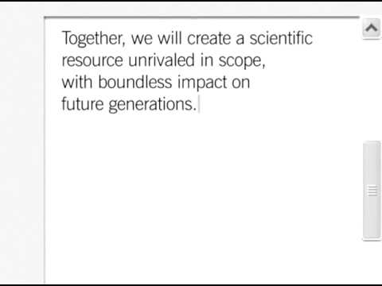
Click on the image above for more content
In addition,
Understanding Biodiversity,
the CK-12 and EOL biodiversity-themed resource currently under development, is an expanding library of biodiversity information aimed at the secondary-level biology classroom.
Understanding Biodiversity
pages will provide information for each species relevant to the high school biology curriculum: cell biology, genetics, evolution, ecology, and physiology. If you would like to submit a species page to
Understanding Biodiversity,
email a proposal for contributions to teachers-requests@ck12.org.
Field Guides
http://fieldguides.eol.org/
Field Guides pull selected content from EOL species pages into a format that is easier to view and use for particular projects. Rather than sorting through all 1.9 million species pages and all of the
Table of Contents
information, users will see information for just the organisms and information they select. Users are able to customize and edit the content in their field guide.
You can try creating a field guide for the organisms found in your schoolyard or for the organisms discussed in another chapter of this FlexBook. See what information is found in EOL and what is missing. Is there anything you can contribute to EOL, such as an image or class research information?
EOL Podcasts
http://education.eol.org/podcast
Lend an ear and discover the wonders of nature—right outside your back door and halfway around the world. EOL audio broadcasts are aimed at learning about life-from organisms as small as yeast to as big as a bowhead whale. Hear people's stories about nature and hone your backyard observation skills. Explore the diversity of life—five minutes and
One Species at a Time
. Listen to the podcasts online, or download them and take them with you on your own exploration of the world around you.
One Species at a Time
The audio series
One Species at a Time
is a tribute to life on Earth
http://education.eol.org/podcast/one-species-time
. Each episode is a story, a mystery, a riddle, or an exploration of a different creature pulsing, fluttering, surging, respiring, and galloping on this planet. Biodiversity is center stage, from scurrying invasive beetles in Oregon to the threatened cedar trees of Lebanon to Ediacaran fauna from 580 million years ago. There are associated
Extras
and a
Meet the Scientist
section with each podcast. Some have associated educational materials. Some have associated educational materials. All podcasts are freely available and can be used in other projects.
The Biodiversity Heritage Library
http://www.biodiversitylibrary.org/
Twelve major natural history museum libraries, botanical libraries, and research institutions have joined to form the
Biodiversity Heritage Library
. The participating libraries have over two million volumes of biodiversity literature collected over 200 years to support the work of scientists, researchers, and students in their home institutions and throughout the world.
The Biodiversity Heritage Library (BHL) consortium cooperates to digitize and make accessible the biodiversity literature held in their collections and to make that literature available for open access and responsible use as a part of a global “biodiversity commons.” Because of the BHL's success in digitizing a significant mass of biodiversity literature, the scientific documentation of the study of living organisms since the time of Linnaeus has became easily accessible.
Anyone can access the BHL website directly or link to it from any EOL species page. When on a species page, scroll down through the Table of Contents on the left hand side of the page to the "References and More Information" section and click on "Biodiversity Heritage Library." BHL literature directly related to the species under consideration will be shown.
The published literature on biological diversity has limited global distribution; much of it is available in only a few select libraries in the developed world. These collections are of exceptional value because the domain of systematic biology depends - more than any other science - upon historic literature. Yet, this wealth of knowledge is available only to those few who can gain direct access to significant library collections. Literature about the
life
that exists in developing countries is often not available within their borders. Biologists have long considered that access to the published literature is one of the chief impediments to the efficiency of research in the field. Among other results, free global access to digitized versions of the literature would make available information about the Earth’s species to all parts of the world. Many of the texts digitized by the BHL have until now only been held in a few European or North American libraries. Now, with this resource, scientists and student in the developing world have access to them, thereby accelerating biodiversity research.
Since 2009, the BHL has expanded globally. The European Commission’s eContentPlus program has recently funded the BHL-Europe project, with 28 institutions, to assemble the European language literature. Additionally, the Chinese Academy of Sciences, the Atlas of Living Australia, Brazil, and the Bibliotheca Alexandrina have created regional BHL sites. These projects will work together to share content, protocols, services, and digital preservation practices.
Lesson Summary
-
Biodiversity refers to the number of species in an ecosystem or the biosphere as a whole.
-
Biodiversity has direct economic benefits. It also provides services to entire ecosystems.
-
Evidence shows that a sixth mass extinction is occurring. The single biggest cause is habitat loss caused by human actions. There are many steps you can take to help protect biodiversity. For example, you can use less energy.
-
The Encyclopedia of Life is a free, online collaborative encyclopedia intended to document all of the 1.9+ million living species known to science.
Lesson Review Questions
Recall
1. What is biodiversity?
2. List three economic benefits of biodiversity.
3. Identify ecosystem services of biodiversity.
4. How is human overpopulation related to the sixth mass extinction?
Apply Concepts
5. Create a poster that conveys simple tips for protecting biodiversity.
6. Why might the brown tree snake or the peregrine falcon serve as “poster species” for causes of the sixth mass extinction?
Think Critically
7. Predict what would happen to other organisms in an ecosystem in which all the decomposers went extinct?
8. Describe a hypothetical example showing how rising sea levels due to global warming might cause extinction.
Points to Consider
All species depend on the environment to provide them with the resources they need. As populations grow, resources may be used up. Just using the resources can create more problems.
-
What resources do you depend on?
-
Does using the resources pollute the environment? Are the resources running out?
Natural Resources and Climate Change
Lesson Objectives
-
Distinguish between renewable and nonrenewable resources.
-
Describe threats to soil and water resources.
-
Identify the causes and effects of air pollution.
-
Explain global climate change.
Vocabulary
-
acid rain
-
air pollution
-
algal bloom
-
dead zone
-
global warming
-
greenhouse effect
-
natural resource
-
nonrenewable resource
-
ozone hole
-
renewable resource
-
soil
-
sustainable use
Introduction
A
natural resource
is something supplied by nature that helps support life. When you think of natural resources, you may think of minerals and fossil fuels. However, ecosystems and the services they provide are also natural resources. Biodiversity is a natural resource as well.
Renewable and Nonrenewable Resources
From the human point of view, natural resources can be classified as renewable or nonrenewable.
Renewable Resources
Renewable resources
can be replenished by natural processes as quickly as humans use them. Examples include sunlight and wind. They are in no danger of being used up (see
Figure
below
). Metals and other minerals are renewable too. They are not destroyed when they are used and can be recycled.
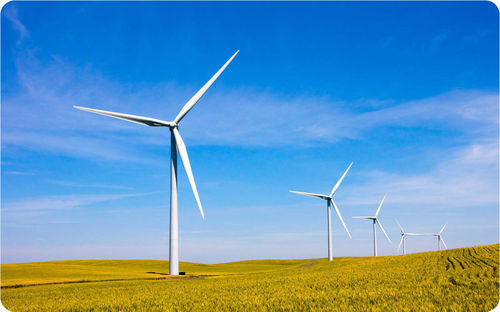
Wind is a renewable resource. Wind turbines like this one harness just a tiny fraction of wind energy.
Living things are considered to be renewable. This is because they can reproduce to replace themselves. However, they can be over-used or misused to the point of extinction. To be truly renewable, they must be used sustainably.
Sustainable use
is the use of resources in a way that meets the needs of the present and also preserves the resources for future generations.
Nonrenewable Resources
Nonrenewable resources
are natural resources that exist in fixed amounts and can be used up. Examples include fossil fuels such as petroleum, coal, and natural gas. These fuels formed from the remains of plants over hundreds of millions of years. We are using them up far faster than they could ever be replaced. At current rates of use, petroleum will be used up in just a few decades and coal in less than 300 years. Nuclear power is also considered to be a nonrenewable resource because it uses up uranium, which will sooner or later run out. It also produces harmful wastes that are difficult to dispose of safely.
Soil and Water Resources
Theoretically, soil and water are renewable resources. However, they may be ruined by careless human actions.
Soil
Soil
is a mixture of eroded rock, minerals, partly decomposed organic matter, and other materials. It is essential for plant growth, so it is the foundation of terrestrial ecosystems. Soil is important for other reasons as well. For example, it removes toxins from water and breaks down wastes.
Although renewable, soil takes a very long to form—up to hundreds of millions of years. So, for human purposes, soil is a nonrenewable resource. It is also constantly depleted of nutrients through careless use and eroded by wind and water. For example, misuse of soil caused a huge amount of it to simply blow away in the 1930s during the Dust Bowl (see
Figure
below
). Soil must be used wisely to preserve it for the future. Conservation practices include contour plowing and terracing. Both reduce soil erosion. Soil also must be protected from toxic wastes.
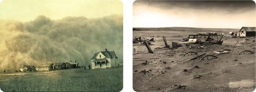
The Dust Bowl occurred between 1933 and 1939 in Oklahoma and other southwestern U.S. states. Plowing had exposed prairie soil. Drought turned the soil to dust. Intense dust storms blew away vast quantities of the soil. Much of the soil blew all the way to the Atlantic Ocean.
Water
Water is essential for all life on Earth. For human use, water must be fresh. Of all the water on Earth, only 1 percent is fresh, liquid water. Most of the rest is either salt water in the ocean or ice in glaciers and ice caps.
Although water is constantly recycled through the water cycle, it is in danger. Over-use and pollution of freshwater threaten the limited supply that people depend on. Already, more than 1 billion people worldwide do not have adequate freshwater. With the rapidly growing human population, the water shortage is likely to get worse.
KQED: Are We in Danger of Running Out of Water?
California's population is growing by 600,000 people a year, but much of the state receives as much annual rainfall as Morocco. With fish populations crashing, global warming, and the demands of the country's largest agricultural industry, the pressures on our water supply are increasing. Are we in danger of running out of water? See
http://www.kqed.org/quest/television/state-of-thirst-californias-water-future
for additional information.
Click on the image above for more content
Too Much of a Good Thing
Water pollution comes from many sources. One of the biggest sources is runoff. Runoff picks up chemicals such as fertilizer from agricultural fields, lawns, and golf courses. It carries the chemicals to bodies of water. The added nutrients from fertilizer often cause excessive growth of algae, creating
algal blooms
(see
Figure
below
). The algae use up oxygen in the water so that other aquatic organisms cannot survive. This has occurred over large areas of the ocean, creating
dead zones
, where low oxygen levels have killed all ocean life. A very large dead zone exists in the Gulf of Mexico. Measures that can help prevent these problems include cutting down on fertilizer use. Preserving wetlands also helps because wetlands filter runoff.
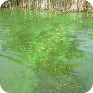
Algal Bloom. Nutrients from fertilizer in runoff caused this algal bloom.
The Atmosphere
The atmosphere plays an important part in maintaining Earth’s freshwater supply. It is part of the water cycle. It refills lakes and rivers with precipitation. The atmosphere also provides organisms with gases needed for life. It contains oxygen for cellular respiration and carbon dioxide for photosynthesis.
Air Pollution
Earth’s atmosphere is vast. However, it has been seriously polluted by human activities.
Air pollution
consists of chemical substances and particles released into the atmosphere, mainly by human actions. The major cause of outdoor air pollution is the burning of fossil fuels. Power plants, motor vehicles, and home furnaces all burn fossil fuels and contribute to the problem (see
Table
below
). Ranching and using chemicals such as fertilizers also cause air pollution. Erosion of soil in farm fields and construction sites adds dust particles to the air as well. Fumes from building materials, furniture, carpets, and paint add toxic chemicals to indoor air.
|
Pollutant
|
Example/Major Source
|
Problem
|
|
Sulfur oxides (SO
x
)
|
Coal-fired power plants
|
Acid Rain
|
|
Nitrogen oxides (NO
x
)
|
Motor vehicle exhaust
|
Acid Rain
|
|
Carbon monoxide (CO)
|
Motor vehicle exhaust
|
Poisoning
|
|
Carbon dioxide (CO
2
)
|
All fossil fuel burning
|
Global Warming
|
|
Particulate matter (smoke, dust)
|
Wood and coal burning
|
Respiratory disease, Global Dimming
|
|
Mercury
|
Coal-fired power plants, medical waste
|
Neurotoxicity
|
|
Smog
|
Coal burning
|
Respiratory problems; eye irritation
|
|
Ground-level ozone
|
Motor vehicle exhaust
|
Respiratory problems; eye irritation
|
In humans, air pollution causes respiratory and cardiovascular problems. In fact, more people die each year from air pollution than automobile accidents. Air pollution also affects ecosystems worldwide by causing acid rain, ozone depletion, and global warming. Ways to reduce air pollution from fossil fuels include switching to nonpolluting energy sources (such as solar energy) and using less energy. What are some ways you could use less energy?
Acid Rain
All life relies on a relatively narrow range of pH, or acidity. That’s because protein structure and function is very sensitive to pH. Air pollution can cause precipitation to become acidic. Nitrogen and sulfur oxides—mainly from motor vehicle exhaust and coal burning—create acids when they combine with water in the air. The acids lower the pH of precipitation, forming
acid rain
. If acid rain falls on the ground, it may damage soil and soil organisms. If it falls on plants, it may kill them (see
Figure
below
). If it falls into lakes, it lowers the pH of the water and kills aquatic organisms.
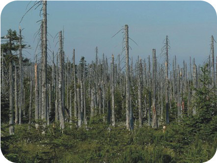
Effects of Acid Rain. These trees in a European forest were killed by acid rain.
Ozone Depletion
There are two types of ozone. You can think of them as bad ozone and good ozone. Both are affected by air pollution.
-
Bad ozone forms near the ground when sunlight reacts with pollutants in the air. Ground-level ozone is harmful to the respiratory systems of humans and other animals.
-
Good ozone forms in a thin layer high up in the atmosphere, between 15 and 35 kilometers above Earth’s surface. This ozone layer shields Earth from most of the sun’s harmful UV radiation. It plays an important role in preventing mutations in the DNA of organisms.
Unfortunately, the layer of good ozone is being destroyed by air pollution. The chief culprits are chlorine and bromine gases. They are released in aerosol sprays, coolants, and other products. Loss of ozone has created an
ozone hole
over Antarctica. Ozone depletion results in higher levels of UV radiation reaching Earth. In humans, this increases skin cancers and eye cataracts. It also disturbs the nitrogen cycle, kills plankton, and disrupts ocean food webs. The total loss of the ozone layer would be devastating to most life. It’s rate of loss has slowed with restrictions on pollutants, but it is still at risk.
Global Climate Change
Another major problem caused by air pollution is global climate change. Gases such as carbon dioxide from the burning of fossil fuels increase the natural greenhouse effect. This raises the temperature of Earth’s surface.
What Is the Greenhouse Effect?
The
greenhouse effect
is a natural feature of Earth’s atmosphere. It occurs when gases in the atmosphere radiate the sun’s heat back down to Earth’s surface (see
Figure
below
). Otherwise, the heat would escape into space. Without the greenhouse effect, Earth’s surface temperature would be far cooler than it is. In fact, it would be too cold to support life as we know it.
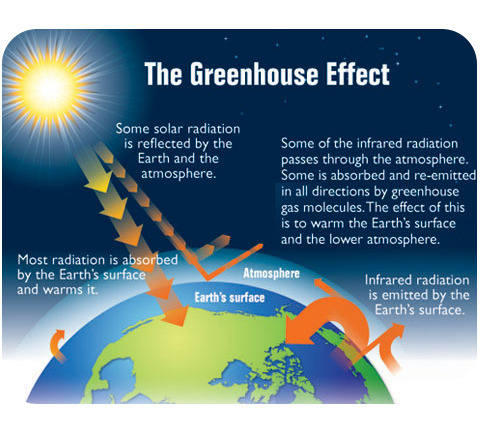
The Greenhouse Effect. Without greenhouse gases, most of the sun’s energy would be radiated from Earth’s surface back out to space.
Global Warming
Global warming
refers to a recent increase in Earth’s average surface temperature (see
Figure
below
). During the past century, the temperature has risen by almost 1°C (about 1.3°F). That may not seem like much. But consider that just 10°C is the difference between an ice-free and an ice-covered Earth.
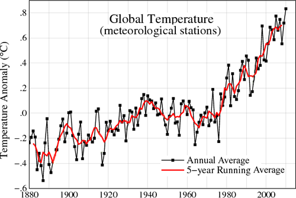
The average annual temperature on Earth has been rising for the past 100 years.
Most scientists agree that global warming is caused by more carbon dioxide in the atmosphere (see
Figure
below
). This increases the greenhouse effect. There is more carbon dioxide mainly because of the burning of fossil fuels. Destroying forests is another cause. With fewer forests, less carbon dioxide is removed from the atmosphere by photosynthesis.
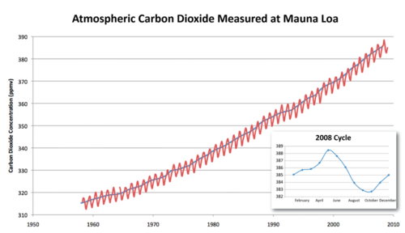
This graph shows the recent trend in carbon dioxide in the atmosphere.
Effects of Climate Change
How has global warming affected Earth and its life? Some of its effects include:
-
Decline in cold-adapted species such as polar bears.
-
Melting of glaciers and rising sea levels.
-
Coastal flooding and shoreline erosion.
-
Heat-related human health problems.
-
More droughts and water shortages.
-
Changing patterns of precipitation.
-
Increasing severity of storms.
-
Major crop losses.
These two videos discuss some of the consequences from changes in ecosystems:
http://www.youtube.com/watch?v=jHWgWxDWhsA
(7:47) and
http://www.youtube.com/watch?v=5qblwORXwrg
(2:26).
KQED: Climate Watch: California at the Tipping Point
The world's climate is changing and California is now being affected in both dramatic and subtle ways. In 2008, scientists determined that California’s temperatures increased by more than 2.1°F during the last century. What’s more, the data showed that human activity has played a significant role in that climate change. "What's just 2 degrees?" you may wonder. But, as the science shows, just 2 degrees is extremely significant.
What does all this temperature change mean? For starters, declining mountain snowpack and prolonged drought conditions could pose a threat to limited water supplies. Heat waves are projected to be longer, bringing increased danger from wildfires and heat-related deaths. Rising sea levels due to temperature shifts jeopardize life in coastal areas, both for human communities and the plants and animals that rely on intertidal and rich wetland ecosystems. Also, more precipitation is expected to fall as rain rather than snow, thereby increasing the risk of floods. And, as heat increases the formation of smog, poor air quality could get even worse.
Climate change may also profoundly affect the economy in California and elsewhere. Shorter ski seasons and damage to the marine ecosystem mean a reduction in tourism. Water shortages mean issues with the commercial and recreational fishing industry, and higher temperatures will affect crop growth and quality, weakening the agricultural industry, to name just a few of the economic issues associated with climate change.
Get an in-depth look at the science behind climate change at
http://www.kqed.org/quest/television/climate-watch-california-at-the-tipping-point-part-one
.
Click on the image above for more content
KQED: Giant Redwoods and Global Warming
Forest ecologist Steve Sillett is leading a team of scientists as they climb and measure every branch of some of the last and tallest old growth redwoods in California. Their goal is to learn how these ancient giants have historically responded to climatic shifts and to monitor how they are being impacted today by global warming. See
http://www.kqed.org/quest/television/science-on-the-spot-measuring-redwood-giants
for additional information.
Click on the image above for more content
KQED: Acidic Seas
Melting glaciers, rising temperatures and droughts are all impacts of global warming. But how does global warming actually affect the oceans? The sea, it turns out, absorbs carbon dioxide emissions. The ocean acts like a giant sponge, absorbing carbon dioxide emissions from the air. And as we add more and more carbon dioxide to air by burning fossil fuels, the ocean is absorbing it. On one level, it's done us a big favor. Scientists say that we would be experiencing much more extreme climate change were it not for the ocean's ability to remove the heat-trapping gas. However, these emissions are causing the oceans to become more acidic. Changing pH levels threaten entire marine food webs, from coral reefs to salmon. See
http://www.kqed.org/quest/radio/acidic-seas
for additional information.
Click on the image above for more content
What Can Be Done?
Efforts to reduce future global warming mainly involve energy use. We need to use less energy, for example, by driving more fuel-efficient cars. We also need to switch to energy sources that produce less carbon dioxide, such as solar and wind energy. At the same time, we can increase the amount of carbon dioxide that is removed from air. We can stop destroying forests and plant new ones.
KQED: Earth Day
Earth Day Network's mission is to broaden, diversify and activate the environmental movement worldwide, driving action year-round through a combination of education, public policy, and consumer campaigns. See
http://www.earthday.org/
for additional information.
Each year, April 22 marks the anniversary of what many consider the birth of the modern environmental movement in 1970. The idea came to Earth Day founder Gaylord Nelson, then a U.S. Senator from Wisconsin, after witnessing the ravages of the 1969 massive oil spill in Santa Barbara, California. On the 22nd of April, 20 million Americans took to the streets, parks, and auditoriums to demonstrate for a healthy, sustainable environment in massive coast-to-coast rallies. Thousands of colleges and universities organized protests against the deterioration of the environment. Groups that had been fighting against oil spills, polluting factories and power plants, raw sewage, toxic dumps, pesticides, freeways, the loss of wilderness, and the extinction of wildlife suddenly realized they shared common values.
As 1990 approached, a group of environmental leaders organized another big campaign. This time, Earth Day went global, mobilizing 200 million people in 141 countries and lifting environmental issues onto the world stage. Earth Day 1990 gave a huge boost to recycling efforts worldwide and helped pave the way for the 1992 United Nations Earth Summit in Rio de Janeiro.
As the year 2000 approached, 5,000 environmental groups in a record 184 countries reached out to hundreds of millions of people. Earth Day 2000 used the Internet to organize activists, but also featured a talking drum chain that traveled from village to village in Gabon, Africa, and hundreds of thousands of people gathered on the National Mall in Washington, DC. Earth Day 2000 sent world leaders the loud and clear message that citizens around the world wanted quick and decisive action on clean energy.
In 2010, the Earth Day Network reestablished Earth Day as a powerful focal point around which people could demonstrate their commitment. The Earth Day Network brought 225,000 people to the National Mall for a Climate Rally, amassed 40 million environmental service actions toward its 2012 goal of
A Billion Acts of Green
, launched an international, 1-million tree planting initiative with
Avatar
director James Cameron, and tripled its online base to over 900,000 members. The fight for a clean environment continues in a climate of increasing urgency, as the ravages of climate change become more manifest every day.
See
http://www.kqed.org/quest/television/earth-day-tv-special-where-weve-been-where-were-headed
for more information on California's environmental movement.
Lesson Summary
-
Renewable resources can be replaced by natural processes as quickly as humans use them. Examples include sunlight and wind. Nonrenewable resources exist in fixed amounts. They can be used up. Examples include fossil fuels such as coal.
-
Soil and water are renewable resources but may be ruined by careless human actions. Soil can be depleted of nutrients. It can also be eroded by wind or water. Over-use and pollution of freshwater threaten the limited supply that people depend on.
-
Air pollution consists of chemical substances and particles released into the air, mainly by human actions. The major cause of outdoor air pollution is the burning of fossil fuels. Indoor air can also be polluted. Air pollution, in turn, causes acid rain, ozone depletion, and global warming.
-
Gases such as carbon dioxide from the burning of fossil fuels increase the natural greenhouse effect. This is raising the temperature of Earth’s surface, and is called global warming.
Lesson Review Questions
Recall
1. Define natural resource.
2. Distinguish between renewable and nonrenewable resources and give examples.
3. Summarize the environmental effects of burning fossil fuels.
4. How does air pollution contribute to global warming?
Apply Concepts
5. How could you create a three-dimensional model of the greenhouse effect? What processes would you demonstrate with your model? What materials would you use?
6. Apply lesson concepts to explain the relationship between the graphs in
Figure
above
and
Figure
above
Think Critically
7. Infer factors that determine whether a natural resource is renewable or nonrenewable.
8. Why would you expect a dead zone to start near the mouth of a river, where the river flows into a body of water?
9. Explain how air pollution is related to acid rain and ozone depletion.
Points to Consider
Microorganisms such as bacteria are important living resources in all ecosystems. They recycle nutrients and other matter.
-
What do you know about microorganisms? Besides bacteria, are there other types of microorganisms?
-
Are viruses microorganisms? Are they living things?
Opening image copyright stockpix4u, 2012.
http://www.shutterstock.com
. Used under license from Shutterstock.com.
References
-
Samuele Cavadini (fusion68k).
http://www.flickr.com/photos/fusion68k/2385374947/
. CC-BY-NC-SA 2.0
-
CK-12 Foundation. . CC-BY-NC-SA 3.0
-
Crab: Andrew Codrington (acodring); Mantis: Adrian Pingstone; Zebra: Paul Maritz, Pharaoh Hound, and Fir0002.
Crab: http://www.flickr.com/photos/acodring/1134082357/; Mantis: http://en.wikipedia.org/wiki/File:Bristol.zoo.dead.leaf.mantis.arp.jpg; Zebra: http://en.wikipedia.org/wiki/File:Zebra_Botswana_edit02.jpg
. Crab: CC-BY-NC 2.0; Mantis: Public Domain; Zebra: CC-BY 2.5
-
Ground Anole image: pondhawk; Tree Anole image copyright Dewitt, 2010.
Ground Anole image: http://www.flickr.com/photos/38686613@N08/4750887836/; Tree Anole image: http://www.shutterstock.com
. Ground Anole image: CC-BY 2.0; Tree Anole image used under license from Shutterstock.com
-
User:Haplochromis.
http://commons.wikimedia.org/wiki/File:Alpheus_bellulus.JPG
. Public Domain
-
Image copyright Carsten Medom Madsen, 2012.
http://www.shutterstock.com
. Used under license from Shutterstock.com
-
Image copyright E. Glanfield, 2012.
http://www.shutterstock.com
. Used under license from Shutterstock.com
-
Image copyright Pi-Lens, 2012.
http://www.shutterstock.com
. Used under license from Shutterstock.com
-
CK-12 Foundation. . CC-BY-NC-SA 3.0
-
CK-12 Foundation. . CC-BY-NC-SA 3.0
-
CK-12 Foundation. . CC-BY-NC-SA 3.0
-
Steve Sawyer.
http://www.flickr.com/photos/stevesawyer/2608190011/
. CC-BY-NC 2.0
-
Courtesy of US Geological Survey.
http://commons.wikimedia.org/wiki/File:Swainson%27s_hawk_migration_route.jpg
. Public Domain
-
CK-12 Foundation. . CC-BY-NC-SA 3.0
-
CK-12 Foundation. . CC-BY-NC-SA 3.0
-
Charmed88.
http://en.wikipedia.org/wiki/File:Stage5.jpg
. Public Domain
-
CK-12 Foundation, based on data from US Census Bureau. . CC-BY-NC-SA 3.0
-
US Census Bureau.
http://www.census.gov/ipc/www/idb/country.php
. Public Domain
-
US Census Bureau.
http://www.census.gov/ipc/www/idb/country.php
. Public Domain
-
US Census Bureau.
http://www.census.gov/ipc/www/idb/country.php
. Public Domain
-
US Census Bureau.
http://www.census.gov/ipc/www/idb/country.php
. Public Domain
-
Barbara Akre/CK-12 Foundation based on data from http://cnx.org/content/m12174/latest/ and http://en.wikipedia.org/wiki/Biodiversity. . CC-BY-NC-SA 3.0
-
Flower: Ahmad Fuad Morad (adaduitokla); Fish: J Petersen; Car: CK-12 Foundation.
Flower: http://www.flickr.com/photos/adaduitokla/5981451772/; Fish: http://commons.wikimedia.org/wiki/File:Ostracion_cubicus.JPG
. Flower: CC-BY-NC-SA 2.0; Fish: CC-BY 2.5; Car: CC-BY-NC-SA 3.0
-
Snake image courtesy of National Park Service.
http://commons.wikimedia.org/wiki/File:Brown_tree_snake_Boiga_irregularis_2_USGS_Photograph.jpg
. Public Domain
-
Image copyright Andy Z., 2010.
http://www.shutterstock.com
. Used under license from Shutterstock.com
-
(Left) Courtesy of National Oceanic and Atmospheric Administration; (Right) Courtesy of US Department of Agriculture.
(Left) http://commons.wikimedia.org/wiki/File:Dust_Storm_Texas_1935.jpg; (Right) http://commons.wikimedia.org/wiki/File:Dust_Bowl_-_Dallas,_South_Dakota_1936.jpg
. (Left) Public Domain; (Right) Public Domain
-
Courtesy of Dr. Jennifer L. Graham, US Geological Survey.
http://gallery.usgs.gov/photos/06_30_2010_hLc5FSq11Y_06_30_2010_11#.T767jMV62Sp
. Public Domain
-
Nipik.
http://commons.wikimedia.org/wiki/File:Acid_rain_woods1.JPG
. Public Domain
-
US EPA.
http://epa.gov/climatechange/indicators/slideshow.html?placeValuesBeforeTB_=savedValues&TB_iframe=true&height=550&width=800
. Public Domain
-
Courtesy of NASA, modified by CK-12 Foundation.
http://commons.wikimedia.org/wiki/File:Temperature_global.gif
. Public Domain
-
CK-12 Foundation, based on data from Carbon Dioxide Information Analysis Center (http://cdiac.ornl.gov/ftp/trends/co2/maunaloa.co2). . CC-BY-NC-SA 3.0
{kind=link}
{kind=link}
{kind=link}
{kind=link}
{kind=link}
{kind=link}
%20http://commons.wikimedia.org/wiki/File:Dust_Storm_Texas_1935.jpg;%20(Right)%20http://commons.wikimedia.org/wiki/File:Dust_Bowl_-_Dallas,_South_Dakota_1936.jpg){kind=link}
{kind=link}
{kind=link}